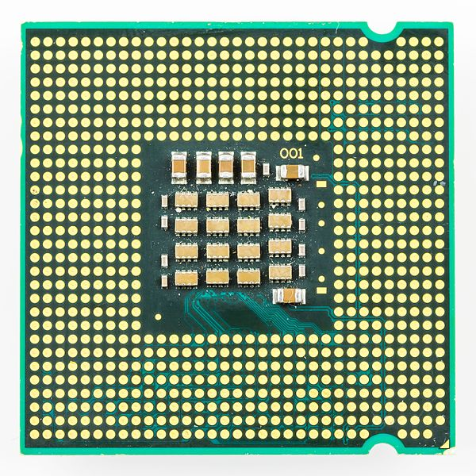
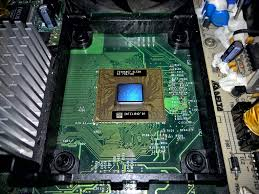
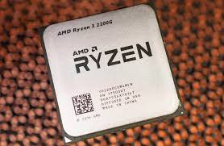
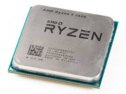
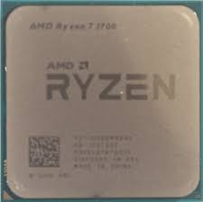

Table of Contents (Click them)
Modern CPUs
Made Possible by the CPU
We all know that computers, laptops, and smartphones need CPUs, but did you know that many other devices use processing chips as well? Almost all of the appliances in your home rely on a microprocessor to monitor tasks. Although these microprocessors are far less powerful than a computer CPU, they fulfill the same role in simpler electronic devices.For instance, a microwave requires a CPU to adjust cooking time and change settings for different types of food. Otherwise, it will only be able to turn on or off.
A Comparison between Microprocessors and CPUs
| Pros | Cons | |
|---|---|---|
|

Microprocessor Source: © Raimond Spekking / CC BY-SA 4.0 Inter Microprocessor. 2016. Wikimedia Commons. https://commons.wikimedia.org/wiki/File:Intel_microprocessor_Pentium_4_HT_651_3.4_GHz_-_SL9KE-3368.jpg |
|
|
|

CPU Source: Diego Torres Silvestre / CC BY 2.0 Xbox (Original) CPU. 2018. Flikcr.com. https://www.flickr.com/photos/3336/39452841025 |
|
|
{kind=link}
Price Comparisons of Today's Processors
Modern day microprocessors are sold for as little as $0.90. They are very inexpensive because they are produced in bulk. In comparison, modern CPUs can cost anywhere from as little as $100 for entry level chips such as the AMD Ryzen 3, to well over $1000 for high-end chips like the Intel i9-9900K. The mid-range chips, such as the Ryzen 5, cost somewhere between $300 to $500.
How do I choose the right CPU?
| Purpose | Example | Description | Recommended Cost |
|---|---|---|---|
| Basic |

Source: Fritzchens Fritz. 2018. Flickr.com. https://www.flickr.com/photos/130561288@N04/39647336475 |
Any entry level CPU is sufficient. |
less than $100 |
| Gaming |

Source: Fritzchens Fritz. AMD Ryzen 5 2600. 2019. Flickr.com. https://www.flickr.com/photos/130561288@N04/39851733273/ |
For high-end performance, use mid-range Intel Core i5 |
$100 ~ $300 |
| Creative Work / Video Editting |

Source: Paul Sullivan / CC BY-ND 2.0. AMD Ryzen 7 CPU 7-3-17. 2017. Flickr.com. https://www.flickr.com/photos/pfsullivan_1056/47018900581 |
You will probably need more cores for more speed for tasks |
$300 ~ $500 |
The End of Moore's Law
In 1965, Gordon E. Moore, a co-founder of Intel, asserted that the number of transistors on a microchip doubles every year. Moore's assertion has become more of a goal in the past decades. It guided planning in the semiconductor industry, and its impacts on society can still be felt today. Computing power has grown exponentially for the past few decades, while the cost of a computer shrank. All sectors benefited from the smaller and faster computer chips.
Unfortunately, transistors will eventually reach their physical limit. This is because as transistors get smaller, cooling them will take more energy than the amount of energy that passes through them. In 2014, Intel did the seemingly impossible by introducing their 14 nm transistors. That's even smaller than a virus! However, they are struggling to bring their 10 nm transistor into the market.
Today, the doubling time of transistors has slowed to 18 months. Most experts agree that processors will reach their physical limits some time in the 2020s. Instead of improving physical processors, companies are shifting their focus to improve software to increase the efficiency of computers. Several field in development include cloud computing, wireless communication, and the Internet of All Things. Another field that became popular recently is quantum computing.
Is quantum computing the future?
In the last few years, manufacturers have been struggling to make more powerful processors. At the same time, a new technology, quantum computing, has risen. Could quantum computers be the next generation of computers?
Like classical computers, quantum computers also rely on binary bits. However, they use qubits instead of normal bits. These qubits exploit the properties of quantum mechanics to enable the quantum computer to operate extremely efficiently. In particular, they capitalize on two phenomena called "superposition" and "entanglement." Superposition refers to the ability of a quantum system to have multiple states simultaneously. Entanglement refers to the property that two quantum particles can be inextricably linked in perfect unison, even if they are separated by enormous distances. Confusing? Long story short, classical computers only use 0s and 1s, but quantum computers use 0s, 1s, as well as their "superpositions" (i.e. a qubit being both 0 and 1 at the same time). This gives them the capability to complete many tasks that are nearly impossible for classical computers, such as factoring incredibly large numbers. On top of that, they are incredibly fast.
Currently, quantum computers are not yet on the market. Nonetheless, technology based on quantum computing is already in use. An encryption technique called "Quantum Key Distribution" (QKD) is already commercially available. It relies on the property that any attempt to measure the properties of a quantum system would disturb it. Many fundamental discoveries have been made in the field of quantum computing, so the first true quantum computer might not be far away.
This is a video made by CNBC which discusses the current hype about quantum computers.